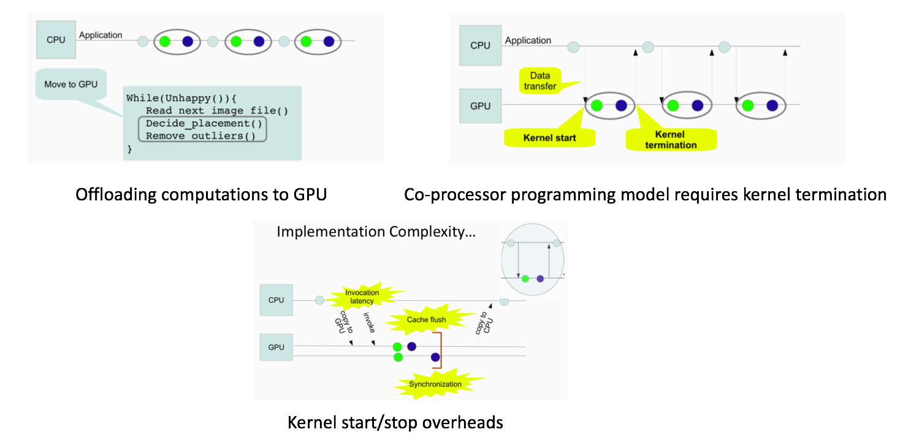
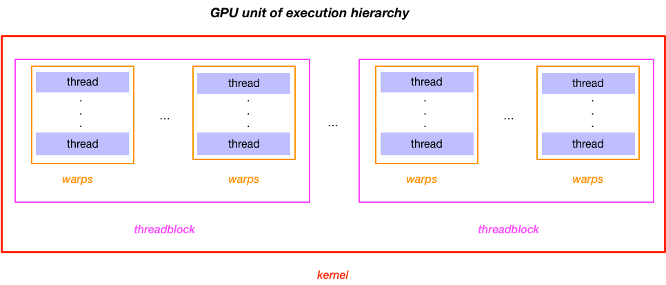
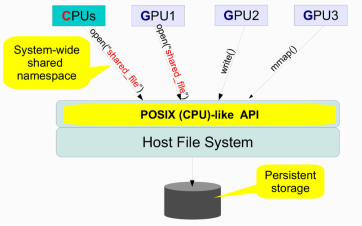
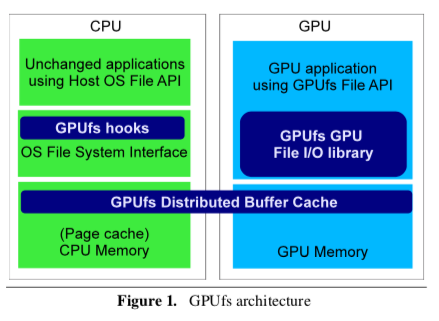
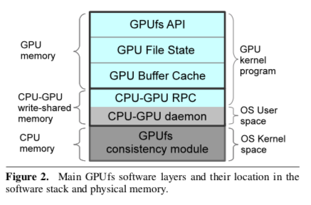
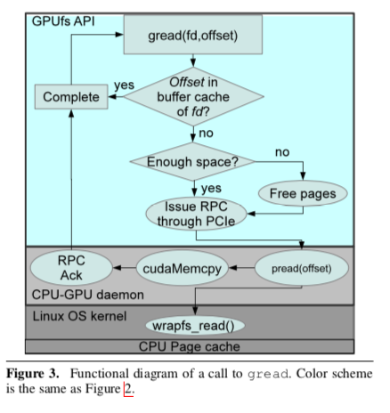
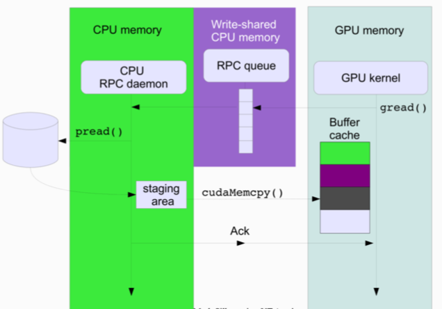

"GPUfs: Integrating a File System with GPUs"
Problem
GPU data access needs explicit management by each individual GPU program. How can we provide an illusion similar to VM to physical pages such that all the data access can be done automatically (i.e., without stating that how data should be fetched from host storage explicitly)? Clearly, FS is a good abstraction but how can we adapt such interface to GPU application needs while maintaining good performance?
Background
-
Motivation
- GPUs have no direct access to files on the host OS file system; developers manage data movement explicitly between CPU main memory and GPU local memory
- Offloading computations to GPU (common application) under GPU-as-coprocessor programming model introduces overhead due to the GPU kernel start/termination

-
About GPU
- GPUs are multicore processors
- Each core called multiprocessor (MP), features a wide SIMD vector unit, which a hardware scheduler multiplexes between multiple execution contexts
- Thread: a GPU's basic sequential unit of execution (higher execution units: warps, threadblock, kernel)

System Design
-
Application point of view

-
Architecture:

- GPU programs can access the host's file system via a GPUfs library linked into the application's GPU code
- GPUfs library works with the host OS on the CPU to coordinate the file system's namespace and data
-
Design principles:
-
Data parallelism
- All application threads in a warp must invoke the same GPUfs call, with the same arguments, at the same point in application code
- Minimize per-open file state (e.g., remove seek pointers)
- Separate
syncfromclose(i.e.,closecall will not triggersync) - Constrain
mmapsemantics to avoid the need for complex memory management on critical data parallel paths
-
Access locality
- Implements a weak consistency model similar to the private workspace model in AFS (i.e., sync-to-open semantics)
- Local file modifications propagate to main CPU memory only when the application explicitly
syncthe file with storage. - Modification is visible to other GPUs during re-open the file
- Allow concurrent non-overlapping writes to the same file (i.e., undefined results for overlapping writes)
-
-
API design highlights
-
Open:
- All GPUfs threads opening the same file obtain a single shared file descriptor (increments reference counts on file descriptor)
-
Read and write:
- File descriptors have no seek pointers
-
Close and sync:
glcosedoes not propage locally writen data back to the CPU, or to other GPUs, until the application explicitly synchronize file data by callingsync
-
File mapping:
- No guarantee to map the entire requested file region
- No guarantee on mapping at a particular address (
MMAP_FIXEDunsupport) - No guarantee returns the requested permission (ask read may return read/write)
- Benefits: allow GPUfs to give the application pointers directly into GPU-local buffer cache pages, residing the same address space as the application's GPU code
-
-
Implementation

-
Top layer:
- Runs in the context of the application's GPU kernels and maintains its data structures in GPU memory
- Implements the GPUfs API, tracks open file state, and implements buffer cache and paging
-
Communication layer:
- Manages GPU-CPU communications
- Data structures shared between the GPU and CPU are stored in write-shared CPU memory accessible to both devices
- Implements a GPU-CPU RPC infrastructure (need hardware support: GPU-CPU memory fences; GPU cahce bypass)
-
Consistency layer:
- OS kernel module running on the host CPU, which manages consistency between the host OS's CPU buffer cache and the GPU buffer caches

-
-
On-demand data transfer

-
Pros
- Simple CPU code
- Handle data that is greater than GPU memory (use buffer cache)
- Enable long-running kernels
- Pay-as-you-go performance
-
Cons
- Memory overhead
- Register pressure
- Idiosyncratic API
comments powered by Disqus